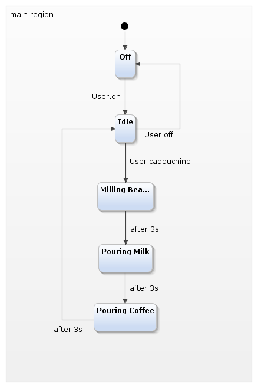
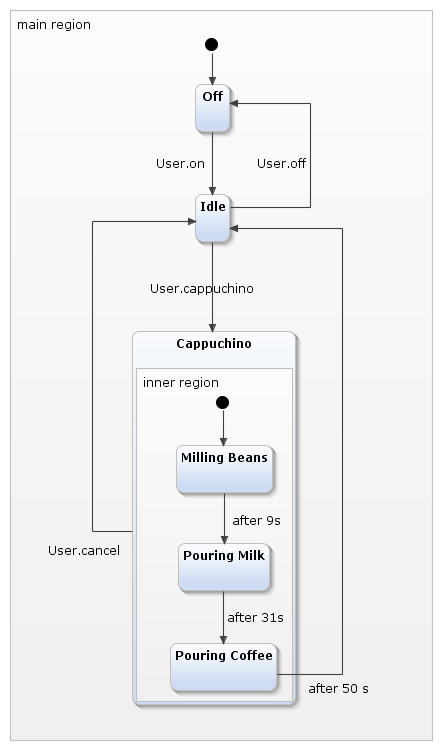

The first statechart is the base for all other statecharts. It models a very basic automated coffee machine. The statechart does not contain any features but states and transitions. The user can switch the machine on and off, and order a cappuchino when the machine is turned on. He can also cancel the operation anytime. 
The second statechart introduces the composite state, which allows to cut all but one "User.cancel" transitions. 
The third iteration shows how to use many composite states to introduce additional behavior without adding too much clutter to the statechart.